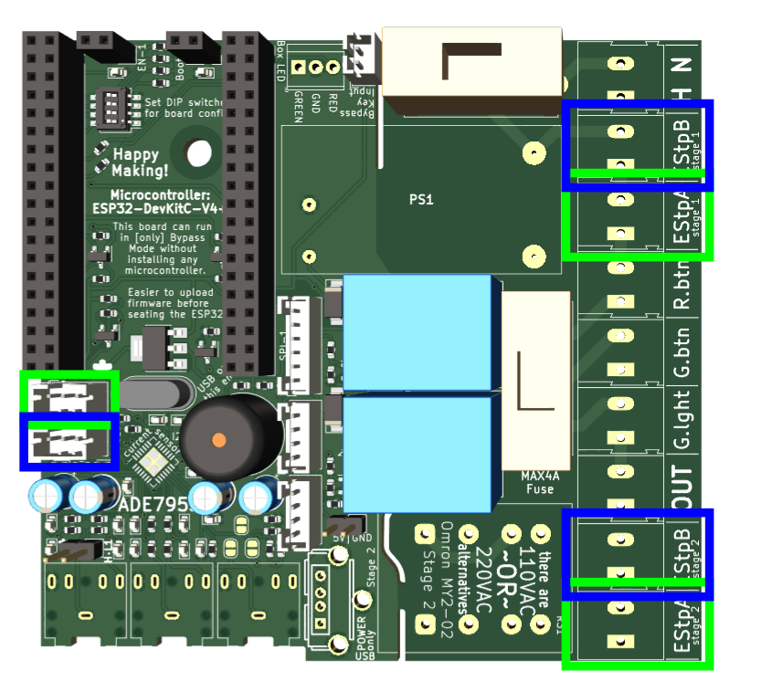
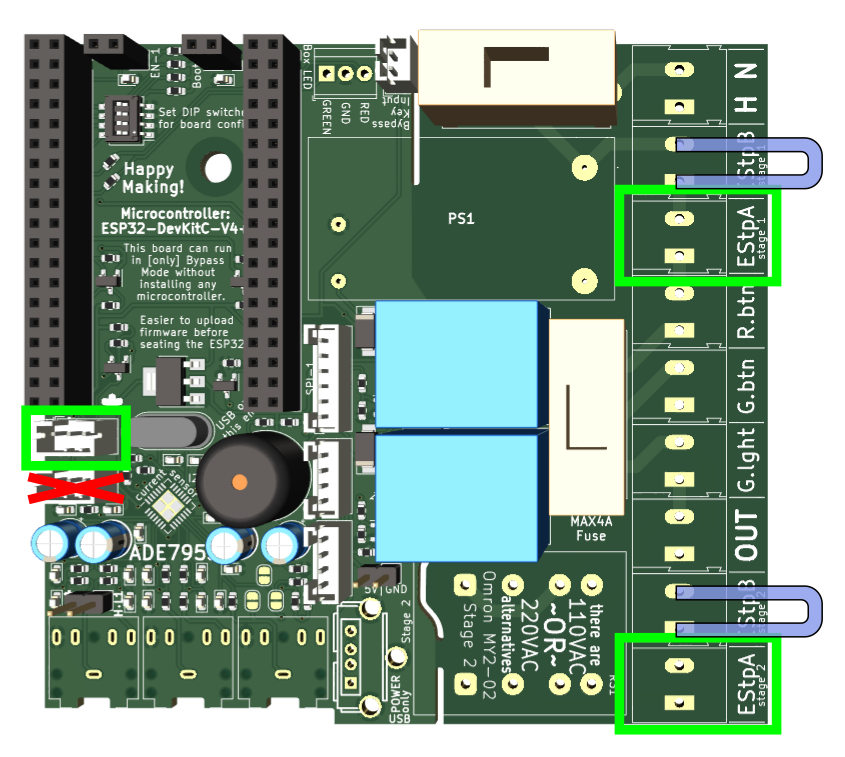
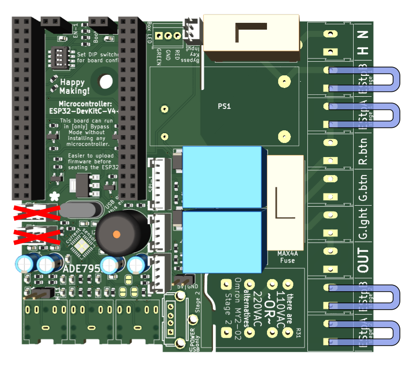
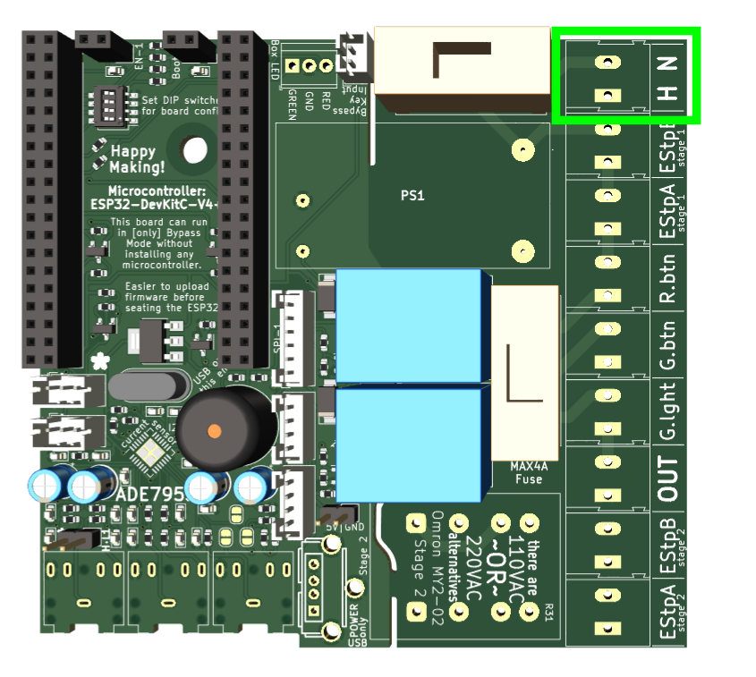
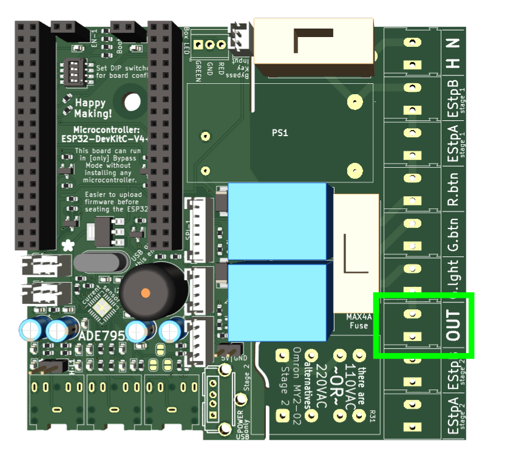
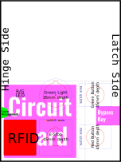

Home
Home
Download complete schematic. Schematic PDF is a snapshot in time, may be slightly out of date from the design files.
Recommended components for each E-Stop:
An E-Stop must be built from a multi-part switch system. Each E-Stop should comprise two N-ON switches rated for more than 4A AC current, an indicator LED, and a low-voltage N-OFF switch.
What is shown below is how the two low-voltage components [lamp and switch] must be configured. The three outbound wires must be soldered to work with a JST connector.
There is one trick part to making an E-Stop: you need to connect the low-voltage components correctly with wires at the switch, and then solder leads onto a JST female connector correctly. This can take some doing, and you will need to test these connections for each E-Stop switch that you assemble.
This configuration is best for when you have an E-Stop on the controller box, and want another mounted closer to where the user will actually be working. A good example is having a second E-Stop right on the front of a Bridgeport Mill.
The control box's E-Stop [A] should be plugged in at all the green locations. The secondary E-Stop should be plugged in to all the blue locations.
This configuration may be the most common. There is an E-Stop on the controller box, and none other.
The control box's E-Stop [A] should be plugged in at all the green locations. Jumpers will need to be placed where the blue 'U' shapes show connections for E-Stop B. Do not use the E-Stop-B JST plug.
This configuration is only for the very safest of tools, when the control box is perhaps undersized.
Jumpers will need to be placed where the blue 'U' shapes show connections for E-Stops A & B. Do not use the E-Stop-A or E-Stop-B JST plugs.
The CT current sensor will be plugged into a 1/8" jack in this location. The current sensor itself should be of this kind of simple split-ring inductive sensor. The exact current rating of the sensor is not critical, but should be slightly above the value of the tool's circuit breaker; adjustments can be made in the firmware `offset` setting. [30A is a good fit for most.]
The current sensor should be clamped around the 'hot' line headed out to the tool, from the contactor.
The RFID card reader connects using one of the two available I2C connections (it does not matter which of these).
The PN532 board should be like those shown here. They should be configured for I2C communication (switch DIP as needed) and have wires soldered to leave the flattest-possible surface to mount the board.
The controller box will need a bypass key-switch, such as those shown here. This switch will need to connect to a 2-pin JST connector as shown on the board.
two components will need to be soldered by the end user.
The 5V transformer will need to be soldered into place in the location marked "PS1" on the board.
The Stage 2 relay will need soldering where indicated. It must be an "Omron MY2-02" relay to fit, but can be rated for 110VAC or 220VAC.
It is advised that after soldering on these components (and arranging the E-Stops) you should set the DIP pins, as appropriate.
There are a handful of other connections that must be made on the right side of the board, to the mains-level control components that are panel-mounted on the box.
The power lines must be connected as shown, with the correct polarity for any single-phase applications. 'H' for the Hot line. 'N' for the neutral line.
The external contactor should be mounted in the controller box, but the two wires coming out here should be used to activate it. These lines should only need to supply a relatively small current to control the state of the contactor.
The green light, green button, and red button should all connect here as shown.
The USB port onboard is there to supply 5V DC to any secondary boards that may one-day be added to the controller boxes. This could include (but is not limited to) e-Ink displays to report reservations or tool status.
The fuses must be in place for the board to function. 4 Amps is the recommended value for these fuses, but 2A or 3A may work equally well if 4A fuses are hard to source in this size. [5x20mm]
The ESP32 boards at the heart of these devices must be "ESP32-DevKitC" but this footprint can include many options. Commonly, we use the ESP32-WROOM-32D such as these.
The Tool Controller box should be set-up with this layout configuration:
